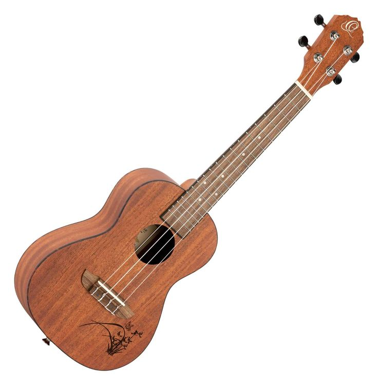
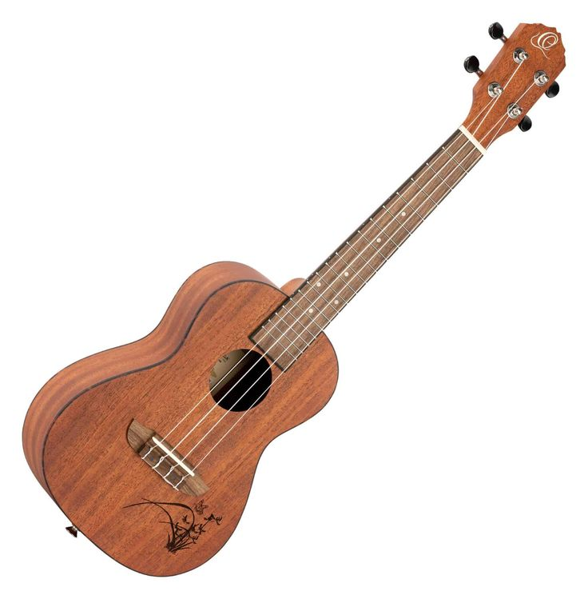

Historia de la Guitarra
La guitarra es uno de los instrumentos más populares en el mundo.La historia de la guitarra se remonta a instrumentos similares en civilizaciones antiguas, evolucionando desde la lira y el laúd hasta la guitarra moderna, con un papel crucial en la música española y latinoamericana, y luego expandiéndose globalmente.


 
